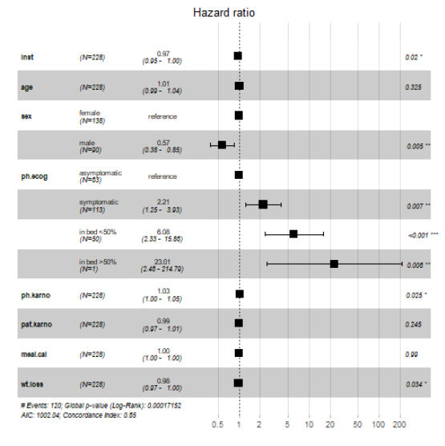
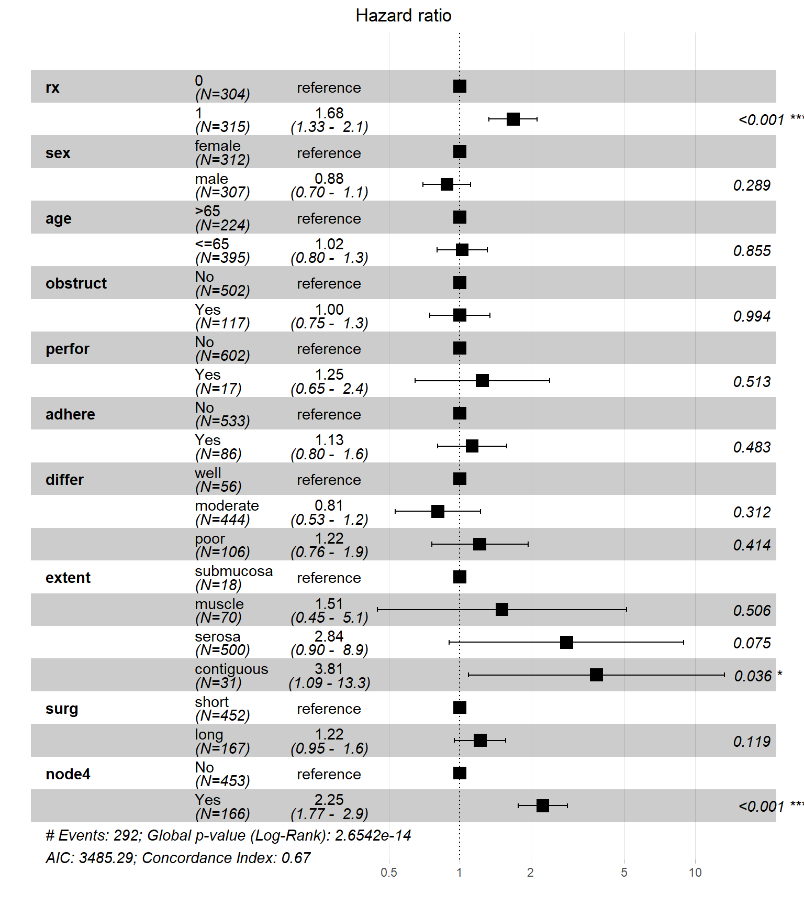
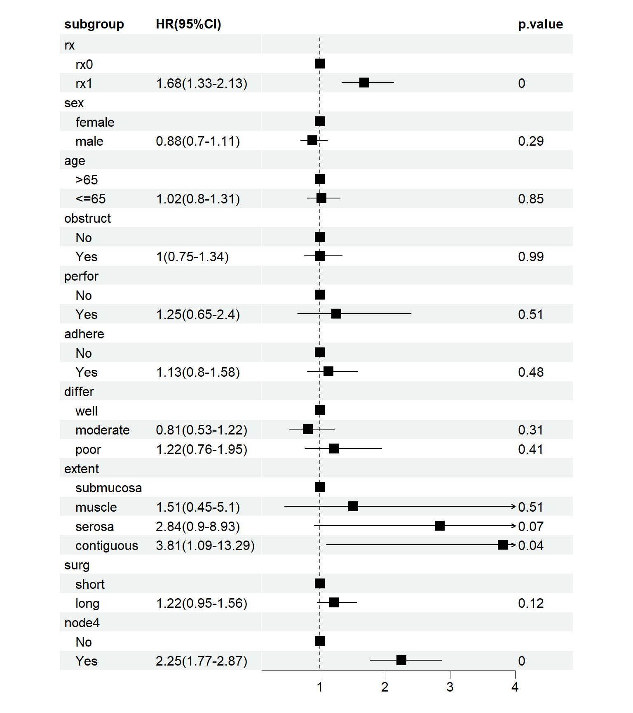

rm(list = ls())
library(survival)
str(colon)
## 'data.frame': 1858 obs. of 16 variables:
## $ id : num 1 1 2 2 3 3 4 4 5 5 ...
## $ study : num 1 1 1 1 1 1 1 1 1 1 ...
## $ rx : Factor w/ 3 levels "Obs","Lev","Lev+5FU": 3 3 3 3 1 1 3 3 1 1 ...
## $ sex : num 1 1 1 1 0 0 0 0 1 1 ...
## $ age : num 43 43 63 63 71 71 66 66 69 69 ...
## $ obstruct: num 0 0 0 0 0 0 1 1 0 0 ...
## $ perfor : num 0 0 0 0 0 0 0 0 0 0 ...
## $ adhere : num 0 0 0 0 1 1 0 0 0 0 ...
## $ nodes : num 5 5 1 1 7 7 6 6 22 22 ...
## $ status : num 1 1 0 0 1 1 1 1 1 1 ...
## $ differ : num 2 2 2 2 2 2 2 2 2 2 ...
## $ extent : num 3 3 3 3 2 2 3 3 3 3 ...
## $ surg : num 0 0 0 0 0 0 1 1 1 1 ...
## $ node4 : num 1 1 0 0 1 1 1 1 1 1 ...
## $ time : num 1521 968 3087 3087 963 ...
## $ etype : num 2 1 2 1 2 1 2 1 2 1 ...46 亚组分析和多因素回归的森林图比较
森林图作为临床文献中常见的图形，相信大家已经不陌生了，我们在之前也介绍过多次森林图的绘制方法了，包括亚组分析的R语言实现等，公众号后台回复森林图即可获取合集。
不知道大家有没有注意过，亚组分析的森林图和多因素回归的森林图几乎长得一模一样！比如以下两幅森林图：


不得不说，这两幅图的样式虽然不一样，但是都显示了HR及可信区间、P值等信息，而且两幅图都有亚组，我在刚开始学习的时候也是非常疑惑，但是当我手动实现过亚组分析和多因素回归的森林图后，一切就很简单了，无非是长得像而已，但是表达的意思完全不一样！
46.1 准备数据
使用survival包中的colon数据集用于演示，这是一份关于结肠癌患者的生存数据，共有1858行，16列，共分为3个组，1个观察组+2个治疗组，观察他们发生终点事件的差异。
各变量的解释如下：
- id：患者id
- study：没啥用，所有患者都是1
- rx：治疗方法，共3种，Obs(观察组), Lev(左旋咪唑), Lev+5FU(左旋咪唑+5-FU)
- sex：性别，1是男性
- age：年龄
- obstruct：肠梗阻，1是有
- perfor：肠穿孔，1是有
- adhere：和附近器官粘连，1是有
- nodes：转移的淋巴结数量
- status：生存状态，0代表删失，1代表发生终点事件
- differ：肿瘤分化程度，1-well,2-moderate,3-poor
- extent：局部扩散情况，1-submucosa，2-muscle，3-serosa，4-contiguous_structures
- surg：手术后多久了，1-long,2-short
- node4：是否有超过4个阳性淋巴结，1代表是
- time：生存时间
- etype：终点事件类型，1-复发，2-死亡
为了演示，我们只选择Obs组和Lev+5FU组的患者，所有的分类变量都变为factor，把年龄也变为分类变量并变成factor。
library(tidyverse)
df <- colon %>%
mutate(rx=as.numeric(rx)) %>%
filter(etype == 1, !rx == 2) %>% #rx %in% c("Obs","Lev+5FU"),
select(time, status,rx, sex, age,obstruct,perfor,adhere,differ,extent,surg,node4) %>%
mutate(sex=factor(sex, levels=c(0,1),labels=c("female","male")),
age=ifelse(age >65,">65","<=65"),
age=factor(age, levels=c(">65","<=65")),
obstruct=factor(obstruct, levels=c(0,1),labels=c("No","Yes")),
perfor=factor(perfor, levels=c(0,1),labels=c("No","Yes")),
adhere=factor(adhere, levels=c(0,1),labels=c("No","Yes")),
differ=factor(differ, levels=c(1,2,3),labels=c("well","moderate","poor")),
extent=factor(extent, levels=c(1,2,3,4),
labels=c("submucosa","muscle","serosa","contiguous")),
surg=factor(surg, levels=c(0,1),labels=c("short","long")),
node4=factor(node4, levels=c(0,1),labels=c("No","Yes")),
rx=ifelse(rx==3,0,1),
rx=factor(rx,levels=c(0,1))
)
str(df)
## 'data.frame': 619 obs. of 12 variables:
## $ time : num 968 3087 542 245 523 ...
## $ status : num 1 0 1 1 1 1 0 0 0 1 ...
## $ rx : Factor w/ 2 levels "0","1": 1 1 2 1 2 1 2 1 1 2 ...
## $ sex : Factor w/ 2 levels "female","male": 2 2 1 1 2 1 2 1 2 2 ...
## $ age : Factor w/ 2 levels ">65","<=65": 2 2 1 1 1 2 2 1 2 2 ...
## $ obstruct: Factor w/ 2 levels "No","Yes": 1 1 1 2 1 1 1 1 1 1 ...
## $ perfor : Factor w/ 2 levels "No","Yes": 1 1 1 1 1 1 1 1 1 1 ...
## $ adhere : Factor w/ 2 levels "No","Yes": 1 1 2 1 1 1 1 1 1 1 ...
## $ differ : Factor w/ 3 levels "well","moderate",..: 2 2 2 2 2 2 2 2 3 2 ...
## $ extent : Factor w/ 4 levels "submucosa","muscle",..: 3 3 2 3 3 3 3 3 3 3 ...
## $ surg : Factor w/ 2 levels "short","long": 1 1 1 2 2 1 1 2 2 1 ...
## $ node4 : Factor w/ 2 levels "No","Yes": 2 1 2 2 2 2 1 1 1 1 ...多因素cox回归现在的很多文章中都是用来筛选变量的，但其实它是一种识别危险因素的方法，通常是根据P值和可信区间判断某个变量对终点事件是不是有影响。
如果某个变量是分类变量，那么它在进入回归分析后会自动被执行哑变量编码，以其中第一个水平作为参考，其他水平都和参考组进行比较。具体的编码细节我在很久之前就详细介绍过了：分类数据回归分析时的编码方案
46.2 多因素回归
library(survival)
fit_multi <- coxph(Surv(time, status) ~ ., data = df)
summary(fit_multi)
## Call:
## coxph(formula = Surv(time, status) ~ ., data = df)
##
## n= 606, number of events= 292
## (13 observations deleted due to missingness)
##
## coef exp(coef) se(coef) z Pr(>|z|)
## rx1 0.521198 1.684043 0.120261 4.334 1.47e-05 ***
## sexmale -0.125724 0.881858 0.118615 -1.060 0.2892
## age<=65 0.022860 1.023123 0.124973 0.183 0.8549
## obstructYes 0.001102 1.001103 0.150254 0.007 0.9941
## perforYes 0.219640 1.245629 0.335564 0.655 0.5128
## adhereYes 0.121203 1.128854 0.172725 0.702 0.4829
## differmoderate -0.214304 0.807103 0.211843 -1.012 0.3117
## differpoor 0.196139 1.216696 0.240222 0.816 0.4142
## extentmuscle 0.413055 1.511429 0.620625 0.666 0.5057
## extentserosa 1.043101 2.838005 0.584977 1.783 0.0746 .
## extentcontiguous 1.336959 3.807447 0.637908 2.096 0.0361 *
## surglong 0.198218 1.219229 0.127288 1.557 0.1194
## node4Yes 0.811284 2.250796 0.123699 6.559 5.43e-11 ***
## ---
## Signif. codes: 0 '***' 0.001 '**' 0.01 '*' 0.05 '.' 0.1 ' ' 1
##
## exp(coef) exp(-coef) lower .95 upper .95
## rx1 1.6840 0.5938 1.3304 2.132
## sexmale 0.8819 1.1340 0.6989 1.113
## age<=65 1.0231 0.9774 0.8008 1.307
## obstructYes 1.0011 0.9989 0.7457 1.344
## perforYes 1.2456 0.8028 0.6453 2.404
## adhereYes 1.1289 0.8859 0.8047 1.584
## differmoderate 0.8071 1.2390 0.5329 1.223
## differpoor 1.2167 0.8219 0.7598 1.948
## extentmuscle 1.5114 0.6616 0.4478 5.101
## extentserosa 2.8380 0.3524 0.9017 8.932
## extentcontiguous 3.8074 0.2626 1.0906 13.293
## surglong 1.2192 0.8202 0.9500 1.565
## node4Yes 2.2508 0.4443 1.7662 2.868
##
## Concordance= 0.672 (se = 0.016 )
## Likelihood ratio test= 93.76 on 13 df, p=3e-14
## Wald test = 93.41 on 13 df, p=3e-14
## Score (logrank) test = 98.95 on 13 df, p=3e-15可以看到这个多因素回归的结果，对于每一个分类变量，都会进行哑变量编码（参考上面的推文），所有结果中会有rx1，sexmale这样的结果，rx这个变量是有2个类别的，分别是类别0和类别1，结果只有rx1，因为列别0是参考，对于sex也是，其中的female时参考，所以只有sexmale的结果。
此时的森林图是这样的，也是表达的一模一样的意思，你可以看到结果中都有一个reference，这个就是参考了，参考类别是没有P值的，也没有可信区间，HR都是1。
library(survminer)
ggforest(fit_multi,fontsize = 1)
## Warning in .get_data(model, data = data): The `data` argument is not provided.
## Data will be extracted from model fit.
为了和亚组分析的森林图比较一下，我们重新提取一下数据，使用forestploter包再画一遍。
multidf <- broom::tidy(fit_multi,exponentiate = T,conf.int = T) %>%
mutate(across(where(is.numeric), round,digits=2),
`HR(95%CI)`=paste0(estimate,"(",conf.low,"-",conf.high,")")
) %>%
select(term,estimate,p.value,conf.low,conf.high,`HR(95%CI)`)
## Warning: There was 1 warning in `mutate()`.
## ℹ In argument: `across(where(is.numeric), round, digits = 2)`.
## Caused by warning:
## ! The `...` argument of `across()` is deprecated as of dplyr 1.1.0.
## Supply arguments directly to `.fns` through an anonymous function instead.
##
## # Previously
## across(a:b, mean, na.rm = TRUE)
##
## # Now
## across(a:b, \(x) mean(x, na.rm = TRUE))
multidf
## # A tibble: 13 × 6
## term estimate p.value conf.low conf.high `HR(95%CI)`
## <chr> <dbl> <dbl> <dbl> <dbl> <chr>
## 1 rx1 1.68 0 1.33 2.13 1.68(1.33-2.13)
## 2 sexmale 0.88 0.29 0.7 1.11 0.88(0.7-1.11)
## 3 age<=65 1.02 0.85 0.8 1.31 1.02(0.8-1.31)
## 4 obstructYes 1 0.99 0.75 1.34 1(0.75-1.34)
## 5 perforYes 1.25 0.51 0.65 2.4 1.25(0.65-2.4)
## 6 adhereYes 1.13 0.48 0.8 1.58 1.13(0.8-1.58)
## 7 differmoderate 0.81 0.31 0.53 1.22 0.81(0.53-1.22)
## 8 differpoor 1.22 0.41 0.76 1.95 1.22(0.76-1.95)
## 9 extentmuscle 1.51 0.51 0.45 5.1 1.51(0.45-5.1)
## 10 extentserosa 2.84 0.07 0.9 8.93 2.84(0.9-8.93)
## 11 extentcontiguous 3.81 0.04 1.09 13.3 3.81(1.09-13.29)
## 12 surglong 1.22 0.12 0.95 1.56 1.22(0.95-1.56)
## 13 node4Yes 2.25 0 1.77 2.87 2.25(1.77-2.87)
#write.csv(multidf,file = "multidf.csv",quote = F)保存后重新整理下格式再读取进来：
plot_df <- read.csv(file="./datasets/multidf.csv",check.names = F)
plot_df
## subgroup estimate p.value conf.low conf.high HR(95%CI)
## 1 rx NA NA NA NA
## 2 rx0 1.00 NA 1.00 1.00
## 3 rx1 1.68 0.00 1.33 2.13 1.68(1.33-2.13)
## 4 sex NA NA NA NA
## 5 female 1.00 NA 1.00 1.00
## 6 male 0.88 0.29 0.70 1.11 0.88(0.7-1.11)
## 7 age NA NA NA NA
## 8 >65 1.00 NA 1.00 1.00
## 9 <=65 1.02 0.85 0.80 1.31 1.02(0.8-1.31)
## 10 obstruct NA NA NA NA
## 11 No 1.00 NA 1.00 1.00
## 12 Yes 1.00 0.99 0.75 1.34 1(0.75-1.34)
## 13 perfor NA NA NA NA
## 14 No 1.00 NA 1.00 1.00
## 15 Yes 1.25 0.51 0.65 2.40 1.25(0.65-2.4)
## 16 adhere NA NA NA NA
## 17 No 1.00 NA 1.00 1.00
## 18 Yes 1.13 0.48 0.80 1.58 1.13(0.8-1.58)
## 19 differ NA NA NA NA
## 20 well 1.00 NA 1.00 1.00
## 21 moderate 0.81 0.31 0.53 1.22 0.81(0.53-1.22)
## 22 poor 1.22 0.41 0.76 1.95 1.22(0.76-1.95)
## 23 extent NA NA NA NA
## 24 submucosa 1.00 NA 1.00 1.00
## 25 muscle 1.51 0.51 0.45 5.10 1.51(0.45-5.1)
## 26 serosa 2.84 0.07 0.90 8.93 2.84(0.9-8.93)
## 27 contiguous 3.81 0.04 1.09 13.29 3.81(1.09-13.29)
## 28 surg NA NA NA NA
## 29 short 1.00 NA 1.00 1.00
## 30 long 1.22 0.12 0.95 1.56 1.22(0.95-1.56)
## 31 node4 NA NA NA NA
## 32 No 1.00 NA 1.00 1.00
## 33 Yes 2.25 0.00 1.77 2.87 2.25(1.77-2.87)把数据中的P值部分的NA变成空格，这样画森林图时就不会显示了，然后增加1列空值用于展示可信区间：
plot_df[,c(3)][is.na(plot_df[,c(3)])] <- " "
plot_df$` ` <- paste(rep(" ", nrow(plot_df)), collapse = " ")
plot_df
## subgroup estimate p.value conf.low conf.high HR(95%CI)
## 1 rx NA NA NA
## 2 rx0 1.00 1.00 1.00
## 3 rx1 1.68 0 1.33 2.13 1.68(1.33-2.13)
## 4 sex NA NA NA
## 5 female 1.00 1.00 1.00
## 6 male 0.88 0.29 0.70 1.11 0.88(0.7-1.11)
## 7 age NA NA NA
## 8 >65 1.00 1.00 1.00
## 9 <=65 1.02 0.85 0.80 1.31 1.02(0.8-1.31)
## 10 obstruct NA NA NA
## 11 No 1.00 1.00 1.00
## 12 Yes 1.00 0.99 0.75 1.34 1(0.75-1.34)
## 13 perfor NA NA NA
## 14 No 1.00 1.00 1.00
## 15 Yes 1.25 0.51 0.65 2.40 1.25(0.65-2.4)
## 16 adhere NA NA NA
## 17 No 1.00 1.00 1.00
## 18 Yes 1.13 0.48 0.80 1.58 1.13(0.8-1.58)
## 19 differ NA NA NA
## 20 well 1.00 1.00 1.00
## 21 moderate 0.81 0.31 0.53 1.22 0.81(0.53-1.22)
## 22 poor 1.22 0.41 0.76 1.95 1.22(0.76-1.95)
## 23 extent NA NA NA
## 24 submucosa 1.00 1.00 1.00
## 25 muscle 1.51 0.51 0.45 5.10 1.51(0.45-5.1)
## 26 serosa 2.84 0.07 0.90 8.93 2.84(0.9-8.93)
## 27 contiguous 3.81 0.04 1.09 13.29 3.81(1.09-13.29)
## 28 surg NA NA NA
## 29 short 1.00 1.00 1.00
## 30 long 1.22 0.12 0.95 1.56 1.22(0.95-1.56)
## 31 node4 NA NA NA
## 32 No 1.00 1.00 1.00
## 33 Yes 2.25 0 1.77 2.87 2.25(1.77-2.87)
##
## 1
## 2
## 3
## 4
## 5
## 6
## 7
## 8
## 9
## 10
## 11
## 12
## 13
## 14
## 15
## 16
## 17
## 18
## 19
## 20
## 21
## 22
## 23
## 24
## 25
## 26
## 27
## 28
## 29
## 30
## 31
## 32
## 33然后画图即可，默认的出图就已经很美观了:
library(forestploter)
library(grid)
p <- forest(
data = plot_df[,c(1,6,7,3)],
lower = plot_df$conf.low,
upper = plot_df$conf.high,
est = plot_df$estimate,
ci_column = 3,
sizes = 1,
ref_line = 1,
xlim = c(0.1,4)
)
print(p)
46.3 亚组分析
亚组分析的思路非常简单，就是在每一个亚组中进行分析，详细过程我们就不介绍了，大家可以参考之前的推文（不理解亚组分析怎么做的一定要看）：
对于我们这个演示数据，它画出来的亚组分析的森林图是这样的（绘制代码参考上面两篇推文）：

46.4 比较
不知道看到这里你明白了没有，亚组分析是在所有数据的子集中做分析，在每一个亚组中都进行一次分析，每次分析都能得到一个HR值和可信区间，把所有结果放在一起，就得到森林图了。
而多因素回归其实只是把分类变量进行哑变量编码而已，其中一个是参考，其余都和参考比，这样也能得到不同类别的HR值和可信区间。如果是数值型变量而不是分类变量不用进行哑变量编码了，自然也不会出现“亚组”的形式。
虽有都有HR值、可信区间、P值等信息，但是表达的意思和实现方法确实去安全不同的！
还有一个我没见过的形式：多因素分析+亚组分析的森林图，但是粉丝群里有群友问到过，意思是在每一个亚组内都做多因素分析，这样的森林图就要在每个亚组内展示多个HR和可信区间了。
46.5 其他资源
亚组分析和森林图的内容还有非常多的细节问题，为了不影响该合集的主要内容，我把它们放在下面的链接中，大家感兴趣的话可点击下面的链接查看，或者在公众号后台回复亚组分析获取合集链接：